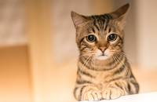

This is a cat
Aboat cat
The cat (Felis catus) is a domestic species of small carnivorous mammal.[1][2] It is the only domesticated species in the cat family and is commonly referred to as the domestic cat or domestic cat to distinguish it from the wild members of the family.
Taxonomy
The scientific name Felis catus was proposed by Carl Linnaeus in 1758 for the domestic cat.
Characteristics
Size
The cats have a smaller skull and more attached bones than the European wildcat.
Skeletons
The skull of a cat is unusual among mammals in that it has very large eye sockets and a powerful, specialized jaw
Claws
Cats have retractable and retractable claws. In the normal, relaxed position, the claws are covered with skin and fur around the pads of the toes.
Ambulation
Ring cat. It walks on its toes, with the bones of the feet making up the underside of the visible leg.